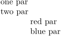

Syntax (autogenerated)
Syntax
| \indenting[...,...,...] | |
| [...,...,...] | never not no yes always first next |
Description
Deprecated; use \setupindenting instead.
- never : \parindent=0pt
- not/no : \noindent
- yes/always : \parindent=\voorwit (dimen)
- first : \indentfirstparagraphtrue
- next : \indentfirstparagraphfalse
- dimen : sets \parindent.
Example
-
one par\par two par\par \setupindenting[yes,1cm] red par\par blue par\par
- 
See also
- Text blocks/Typography/Indentation
- \setupindenting
- \indentation to force indenting
Help from ConTeXt-Mailinglist/Forum
All issues with: